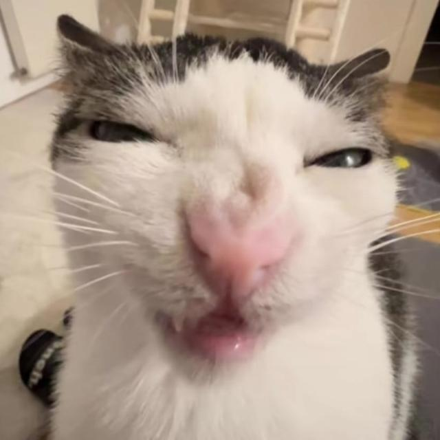
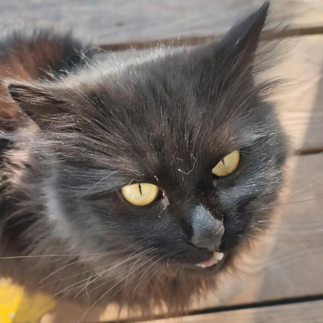
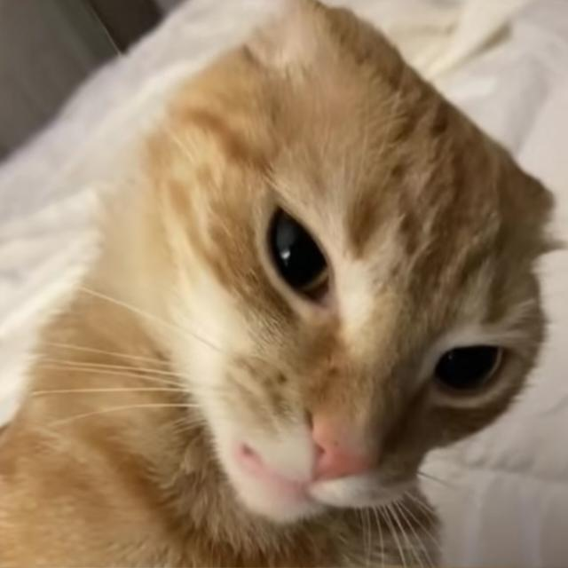

Сташков Георгий
Junior frontend programmer - в основном занимался визуализацией внешней части этого проекта. Оформление, анимации, затемнения, переходы - его работа.

Устинов Артём
Junior backend programmer - в основном занимался обеспечением работоспособоности этого проекта. Мета-ссылки, переменные, алгоритмы - его работа.
